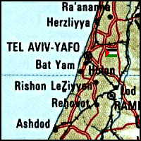

href="
Destroyed Palestinian Villages:
A Reign of Terror & Systematic Expulsion
Salama

Salama stood on flat terrain on the central coastal plain, on the north side of a highway leading to Jaffa (approx. location at  on map). The inhabitants believed that their village was named after Salama Abu Hashim, a companion of the Prophet Muhammad, who was buried in the village in A.D. 634. His tomb, on the Northwest side of the village, became known as the shrine of Sayyiduna (our master) Salama (Syrian Sufi traveller al-Bakri al-Siddiqi mentioned visiting the shrine in the mid-1700s). In 1596, Salama was a village in the nahiya of Ramla (liwa' of Gaza) with a population of ninety-four. It paid taxes on a number of crops, including wheat and barley, as well as on other types of property such as goats and beehives.
on map). The inhabitants believed that their village was named after Salama Abu Hashim, a companion of the Prophet Muhammad, who was buried in the village in A.D. 634. His tomb, on the Northwest side of the village, became known as the shrine of Sayyiduna (our master) Salama (Syrian Sufi traveller al-Bakri al-Siddiqi mentioned visiting the shrine in the mid-1700s). In 1596, Salama was a village in the nahiya of Ramla (liwa' of Gaza) with a population of ninety-four. It paid taxes on a number of crops, including wheat and barley, as well as on other types of property such as goats and beehives.
During the British Mandate, Salama was divided into quarters, each quarter inhabited by a hamula (clan) or sub-hamula. The houses were at first clustered together, with the houses of each hamula or sub-hamula centered around a large courtyard (hawsh) that had a single common entrance. The courtyard provided private space for women to do their household chores, for children to play, and for families to gather in the evening or on special occasions. Some families also built houses in the orchards, but these did not usually belong to hamulas. Although most houses were constructed of adobe brick, some people built stone houses and Baghdadi houses (which were made of wood and insulated with gravel and whitewash).
The population was comprised of 6,670 Muslims and 60 Christians. Salama had two elementary schools, one for boys opened in 1920, and another for girls opened in 1936. In 1941, 504 boys and 121 girls were enrolled at the schools. The villagers also supported a soccer team
There were numerous stores in the village including five coffee shops. During the Mandate, a transportation company was established in Salama with partners from the neighboring village of al-'Abbasiyya--the company was called the Salama-al'Abbasiyya Automobile Company. The villagers were engaged primarily in agriculture and associated activities, with a handful employed in commerce and the civil services. In 1944/45 a total of 2,853 dunums were devoted to citrus and banana tree, 2,266 to cereals, and 370 to orchards. Agriculture was rainfed with additional water for irrigation drawn from some eighty-five artesian wells. The residents shipped their produce to Jaffa, and sold some of it in nearby Jewish settlements. They also shipped milk to a dairy factory in Jaffa owned by two men from Salama.
Salama was hemmed in by a number of Jewish settlements and came under almost continuous attack for a period of five months, beginning a week after the passage of the UN Partition Resolution on 5 December 1947. The New York Times reported that on that date, members of the Haganah opened fire on Salama with small-arms fire, and that Arab families were fleeing towards al-Ramla and Lydda. The Palestinian newspaper Filastin reported that a two-pronged Haganah attack--though briefly halted by the arrival of British police--carried on into the night. Sniper activity and other assaults were reported over the following two days. The History of the Haganah states that in December 1947, "the Haganah leadership in Tel Aviv decided to attack the infamous village of Salama," adding that "this was the first attack on an Arab village." The assault was carried out at dawn on 19 December and was unsuccessful. Palestinian historian 'Arif al-'Arif mentions another raid on 28 December and writes that it was preceded by a diversionary attack from the settlement of Petach Tiqwa. The raid originated at Ramat Gan, where a large force drawn from the Jewish Settlement Police and the Irgun Zvai Leumi (IZL) assembled. The village's defenders managed not only to drive the attackers back, but mounted a counteroffensive against Petach Tiqwa, where they were joined by militiamen from Lydda and al-'Abbasyia.
In early January 1948, the villagers had set up a make-shift defensive perimeter around Salama. The New York Times reported on 11 January that British army units had used gunfire to clear four roadblocks around the village, and had told village leaders to fill in a large ditch that was "presumably intended as a defense measure." Filastin described the same incident, adding that the army justified its actions by saying that it needed to move freely through the area. The defensive barriers were evidently being put to good use, since Filastin reported no less than ten separate attacks on the village in the month of January alone, sometimes more than one in a single night.
The Jewish leadership believed that Salama provided shelter for non-local guerrillas, but al-'Arif writes that it was the villagers themselves who organized a militia of around thirty men in the wake of the UN Partition Resolution in November 1947. Afterwards, scarcely a day went by without a skirmish around the village, during which "bullets rained down" upon Salama. Israeli historian Benny Morris records that on 18 January 1948, the Third Battalion of the Alexandroni Brigade launched a major offensive against the village. The operational orders for the January operation stated: "The aim is... to attack the northern part of the village of Salama... to cause deaths, blow up houses and to burn everything possible." The plan was qualified with the order that, "Efforts should be made to avoid harming women and children." According to Morris, numerous houses were destroyed in the January attack.
Two other assaults (28 February and 15-16 April) were reported by various sources. During the February offensive, the Arab Liberation Army sent twenty fighters to help in the defense of Salama. The New York Times reported after the attack that the Haganah had "invaded" Salama, and that the attack was only made public the following day, when British police discovered the bodies of six Jews killed during the attempted invasion. A communique issued by Arab militia forces based in the area said that a force of 250 Jewish troops participated in the first attack, adding that the six Jews killed were part of the advance party which had been pinned down by the village's defenders. The communique, published in Filastin, said that three Arabs were also killed in the battle, including one woman. Al-'Arif writes that, in the second attack, at least 30 three-inch mortar shells rained down on the village from Haganah positions at Petach Tiqwa.
The attacks persisted into the second half of April, but the village defenders soon ran out of ammunition, and the residents began to leave. The village was not occupied, however, until the end of April, during Operation Chametz ("Passover") which aimed at the encirclement and occupation of Jaffa. Units of the Alexandroni Brigade occupied Salama on 29 April 1948. Morris quotes Haganah radio as saying that the village was evacuated "at the first onslaught," but al-'Arif states that Jewish forces did not enter Salama until they had made sure that it had been evacuated by its residents. Al-'Arif writes that the village was empty by 30 April, and a New York Times dispatch indicates that Salama surrendered to the Haganah on that date. Later that day, Salama was visited by Jewish Agency chairman David Ben-Gurion who wrote in his diary that he found "only one old blind woman," in Salama. Morris states that the villagers were scattered between various locations, including Ramallah, Nablus, Gaza, and Jordan.
The village and its lands have been absorbed by the expansion of Tel Aviv.
A number of village buildings remain: numerous houses, four coffee shops, the mosque, the shrine, one cemetery, and the two schools. The houses are deserted and in a state of disrepair, except for a few that are inhabited by Jewish families. Most are made of concrete and exhibit a variety of architectural features. They are either one or two storey buildings and have rectangular doors and windows (except for one that combines both arched and rectangular windows). Four of the houses are identified as formerly belonging to Ahmad Muhammad Salih, Mustafa Abu Najm, Abu Jarada, and Al-'Amasha. The house of Abu Najm is a two-storey, concrete structure with rectangular doors and windows (some of which have grillwork and others shutters). It is sealed, and the outside staircase leading to its second floor is gone.
The four coffee shops were named after their owner Muhammad al-Hawtari, Abu 'Asba, Sha'ban al-Naji, and al-'Arbid. An Israeli family lives in the al-Hawtari coffee shop. It has an enclosed front porch and a slanted roof covered with corrugated metal sheets--the bottom door panel has been marked with a star of David. The domed shrine is in a state of disrepair. One of the two village cemeteries ("the martyr's cemetery") is deserted and overgrown with wild vegetation, while the other has been turned into a small park. Cacti and fig, cypress, palm, and Christ's-thorn trees grow around the site. The surrounding land is generally covered by newer buildings.
Return to Destroyed Palestinian Villages index.
| About CRDPS | Race Against Time Project | CRDPS Archives |
| Complete Guide to Palestine's Websites - Academic & Research listings |
Material compiled by Rami Nashashibi, June 1996.
Page design by Birzeit Web Team, March 1997.
Center for Research and Documentation of Palestinian Society, Birzeit University, P.O. Box 14, Birzeit, West Bank, Palestine.
Tel: +972-2-998-2975, Fax: +972-2-995-2975, E-mail: center@research.birzeit.edu.